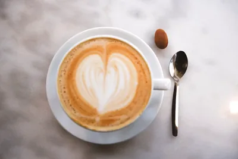
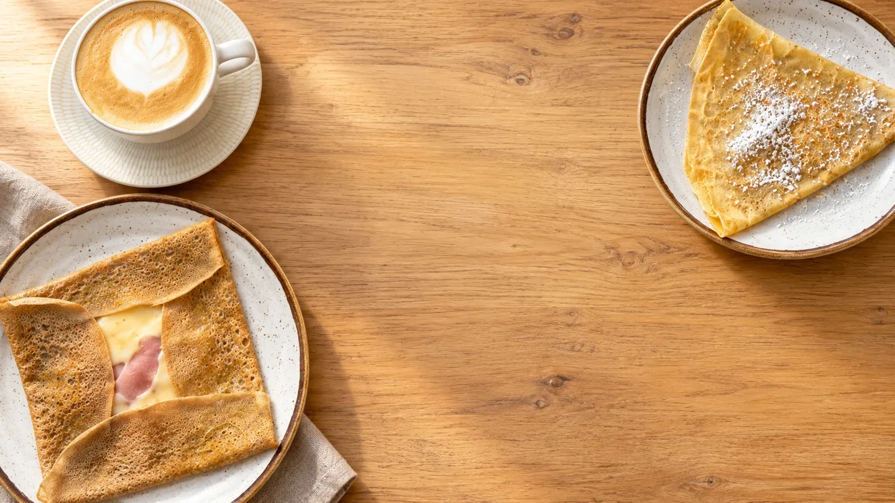
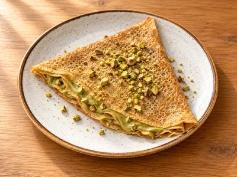
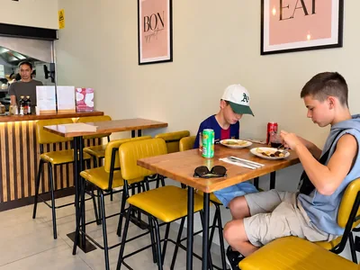
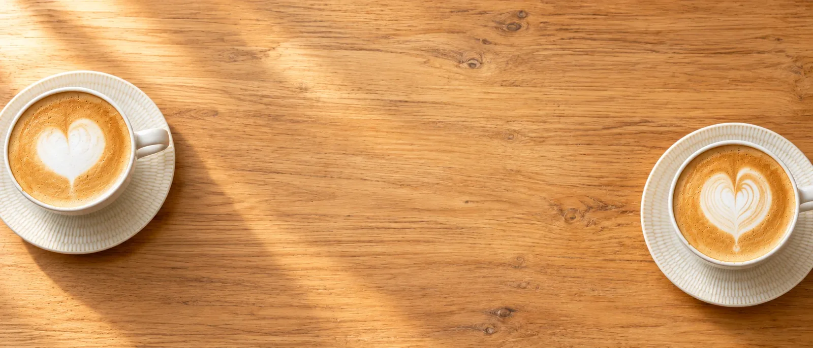
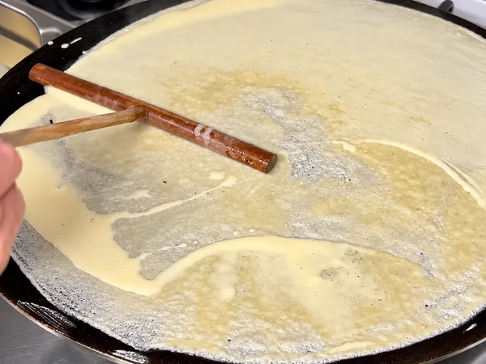
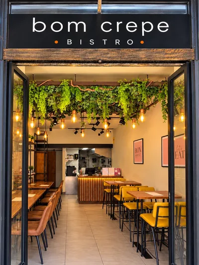
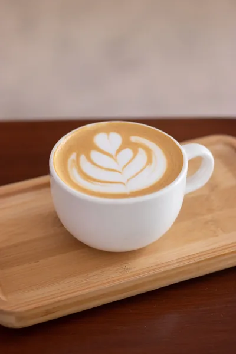
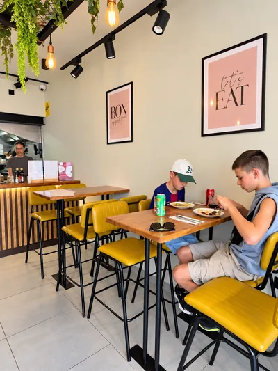

Café para a sua pausa
Do espresso ao cappuccino, há sempre uma boa razão para ficar mais um pouco.
Escolher o meu café
O seu cantinho em Alvalade
Galettes de trigo-sarraceno e crepes doces,
num cantinho acolhedor de Lisboa.
Bem-vindo ao Bom Crepe
Um café, um crepe e tempo para aproveitar.

Do espresso ao cappuccino, há sempre uma boa razão para ficar mais um pouco.
Escolher o meu café
Galettes com massa fina de trigo-sarraceno e crepes doces feitos na hora. O difícil é escolher.
Descobrir os sabores
Plantas, luz quente e boa companhia. Um lugar de bairro onde apetece voltar.
Venha conhecer-nosUma pequena tentação
Do salgado ao doce, passando por uma boa salada.

O próximo encontro é aqui
Um crepe a dois, um café entre amigos.
Há sempre um bom motivo para nos visitar.
+351 928 233 867
A reserva é confirmada pela nossa equipa.
Guardamos a sua mesa até 10 minutos após a hora marcada. Depois desse período, poderá ser disponibilizada a outros clientes.

Feito na hora. Com carinho.A nossa história
Os crepes fazem Yuliia recordar as panquecas finas da sua infância na Ucrânia. Em Alvalade, encontrou a oportunidade de dar uma nova vida a este espaço e concretizar o sonho de ter o seu próprio café.
Assim nasceu o Bom Crepe Bistro: um lugar de bairro, simples e acolhedor, feito de sabores e de encontros.
Conheça a história na NiT (abre noutro separador)À conversa com quem nos visita
Já passou por cá? Conheça as avaliações e partilhe a sua experiência no Google.
Entre. Sinta-se em casa.
Uma mesa à sua espera, a luz de Lisboa e o aroma do café. Conheça um pouco do nosso cantinho em Alvalade.



Memórias da inauguração
Um pequeno passeio da esplanada ao interior.
Alvalade, Lisboa
De segunda-feira a sábadodas 10h às 21h
Domingo: encerrado
A dois passos do metroPerto da estação de Alvalade
Pagamento no estabelecimento.
Numerário, cartão e contactless.